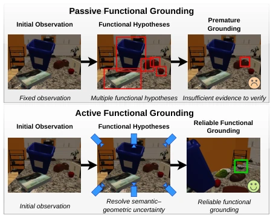
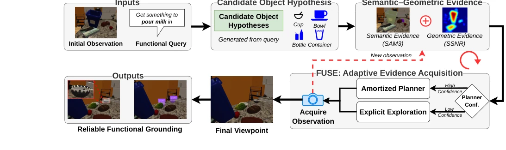

This paper adds an active perspective to embodied AI's "finding work"; the FUSE framework is quite interesting; instead of standing idly waiting for data, it looks for evidence everywhere like a detective. It splits "finding functions" into semantic and geometric streams, using SAM3 and 3DGS for fusion. However, the real-time rendering overhead of 3DGS might be hard to sustain on real hardware, and the paper does not mention the specific latency of multimodal fusion. Additionally, Habitat simulation inevitably has a gap with reality, and the Oracle comparison group has a slight suspicion of "cheating". But overall, it found a good balance point between computational efficiency and success rate, much better than pure VLM wandering aimlessly, at least knowing when to stop. The adaptive switching mechanism it proposed is a highlight, but it relies on pre-trained semantic models; if the candidate set itself is wrong, no matter how diligent the exploration is, it is useless, which can also be seen in the ablation experiments.
研究动机Motivation
具身智能的核心是理解物体功能，但现有方法大多基于固定视角。CRAFT 等神经符号框架虽能推理功能，却假设视觉证据已充足 (Chen, Lin, and Aakur 2025)。Ahn 等人 (2022) 也指出功能理解需多模态，但没解决证据缺失问题。现有主动感知多针对已知类别搜索 (Chaplot et al. 2020)，或任务导向抓取但目标已定 (Lei, Jiang, and Daniilidis 2026)。FUSE 针对的是“功能查询诱导的候选假设”下的主动探索，解决功能线索被遮挡或模糊时的定位难题，填补了从查询到可靠空间 grounding 之间的感知空白。这解决了被动 grounding 容易过早承诺的问题，也区别于传统导航的已知目标搜索，强调在未知目标下通过证据积累来消除不确定性，而非单纯寻找特定类别。
The core of embodied AI is understanding object functions, but existing methods are mostly based on fixed perspectives. Neuro-symbolic frameworks like CRAFT can reason about functions, but assume visual evidence is sufficient (Chen, Lin, and Aakur 2025). Ahn et al. (2022) also pointed out that function understanding requires multimodality, but did not solve the evidence missing problem. Existing active perception mostly targets known class search (Chaplot et al. 2020), or task-oriented grasping but with targets already set (Lei, Jiang, and Daniilidis 2026). FUSE targets active exploration under "function query induced candidate hypotheses", solving the localization problem when function clues are occluded or blurred, filling the perception gap between query and reliable spatial grounding. This solves the problem of premature commitment in passive grounding, and distinguishes from known target search in traditional navigation, emphasizing eliminating uncertainty through evidence accumulation under unknown targets, rather than simply searching for specific categories.

Figure 1: Active functional affordance grounding. Passive grounding predicts from a fixed observation and may commit before sufficient evidence is available. Active grounding ac- quires additional observations to reduce semantic–geometric uncertainty until a functionally suitable object is grounded.
The FUSE process begins with function queries generating candidate object hypotheses. The core is adaptive evidence acquisition: first use a lightweight Amortized Planner to predict actions; if decision entropy is low, execute directly; if entropy is high, trigger Explicit Exploration. Explicit mode uses 3DGS to maintain spatial evidence, combining SAM3 semantic masks and SSNR geometric uncertainty maps (calculated via rendering and observation gradient difference) to generate an evidence collection map. Action selection is based on the average value of the evidence map in the field of view region. Termination conditions are no improvement for K consecutive steps or budget exhausted. The innovation lies in fusing semantic compatibility and geometric reconstruction quality into an uncertainty field, and dynamically switching planning modes through confidence gating, maintaining accuracy while reducing computation. 3DGS representation supports cross-view evidence accumulation, SSNR effectively quantifies geometric missing, this hybrid architecture is more robust than single strategies. Additionally, depth proximity is introduced into the stopping criterion, preventing early termination under distant weak views, improving the reliability of final grounding.

Figure 2: Overview of FUSE. A functional query is first converted into candidate object hypotheses and grounded using semantic (SAM3) and geometric (SSNR) evidence. FUSE adapts between fast amortized planning and explicit exploration to acquire informative observations until no further improvement is observed, returning the best reliable functional grounding.
In the Habitat benchmark test, FUSE compared baselines such as static, random, VLM, and explicit exploration. Results show FUSE leads with 72% success rate, better than explicit exploration's 70% and Amortized's 66%. Key finding is task-oriented perception significantly outperforms unguided exploration (Random 56%). Ablation shows geometric uncertainty drives exploration better than pure semantic (Geometry Only 65% vs Semantic Only 53%). Additionally, introducing depth proximity as a stopping criterion improved 5% success rate. Computationally, FUSE is 1.33 times faster than explicit exploration, proving adaptive switching is effective. Performance is robust under different knowledge sources, but Oracle group shows candidate generation is still a bottleneck. Experiments also verified pixel-level semantic is better than patch-level, indicating fine-grained evidence is crucial for function grounding, overall proving the necessity of active perception in function understanding tasks.